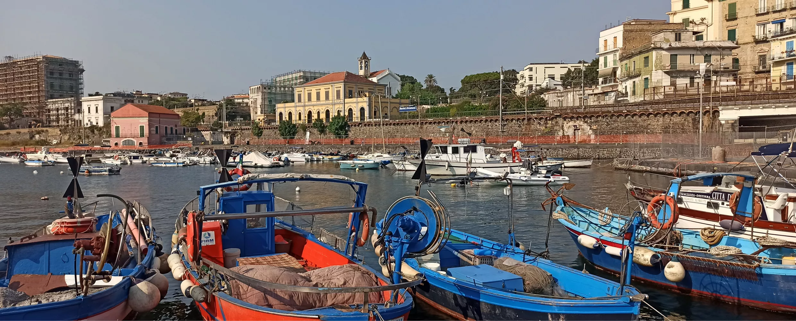

Porto del Granatello
Il Porto del Granatello si trova a Portici, in provincia di Napoli, ed è uno dei luoghi più suggestivi della costa vesuviana. È frequentato da pescatori, turisti e amanti delle passeggiate sul mare. Da qui si possono ammirare tramonti spettacolari e godere della brezza marina.